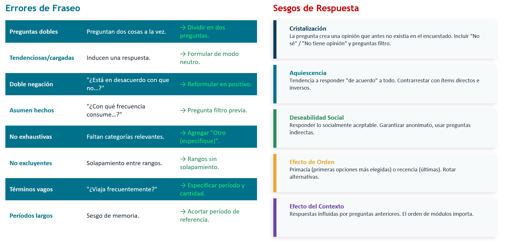

Métodos Cuantitativos I - Clase 9
2026-05-11
Tabla de contenidos
- Fuentes de información cuantitativa
- La encuesta y el cuestionario: estructura y componentes
- Tipos de pregunta según contenido
- Tipos de pregunta según tipo de respuesta
- Tipos de pregunta según categorías de respuesta
- Fraseo de preguntas y cristalización
- Errores comunes y recomendaciones
- Síntesis
01. Fuentes de información cuantitativa
Fuentes de información cuantitativa
- Además de especificar el tipo de estudio, tipo de diseño, estrategia metodológica y estrategia muestral,
el marco metodológico debe especificar cual es el instrumento que se utilizará para producir información.
Generar datos!
En el marco de la metodología cuantitativa, debe ser un instrumento que permita traducir fenómenos sociales a números. Hay diversas alternativas, según el tipo de objeto que estemos estudiando

¿Cómo se produce información cuantitativa?
¿De dónde vienen los números que analizamos?
La investigación cuantitativa utiliza números mediante procesos de medición, codificación, análisis y selección de sujetos (Asún, en Canales, 2006). La pregunta clave es: ¿cómo generamos esos números?
Existen dos grandes caminos:
Datos primarios: producidos directamente por el investigador para responder su pregunta de investigación.
Datos secundarios: producidos por otros (instituciones, investigadores previos) y reutilizados con un nuevo propósito analítico.
Múltiples formas de producir información cuantitativa
Panorama de fuentes de información cuantitativa
A. Datos primarios (el investigador los produce)
| Técnica | Descripción | Ejemplo |
|---|---|---|
| Encuesta (cuestionario) | Instrumento estandarizado aplicado a una muestra. Presencial, telefónica u online. | Encuesta sobre participación política a estudiantes universitarios |
| Observación estructurada | Registro sistemático de conductas con pauta de codificación predefinida. | Contar frecuencia de interacciones en sala de clases |
| Experimento / cuasi-experimento | Manipulación controlada de variables para medir efectos causales. | Efecto de un estímulo informativo sobre actitudes hacia la inmigración |
| Test o escala estandarizada | Instrumentos validados para medir constructos psicológicos o sociales. | Escala de autoeficacia, test de autoritarismo |
Panorama de fuentes de información cuantitativa
B. Datos secundarios (producidos por otros)
| Fuente | Descripción | Ejemplo en Chile |
|---|---|---|
| Encuestas preexistentes | Grandes encuestas nacionales o internacionales disponibles para análisis. | CASEN, CEP, Latinobarómetro, ELSOC, World Values Survey |
| Registros administrativos | Datos generados por instituciones en su gestión cotidiana. | MINSAL (defunciones, egresos hospitalarios), MINEDUC (matrícula, SIMCE), SII, Registro Civil |
| Censos | Registro exhaustivo de una población en un momento determinado. | Censo de Población y Vivienda (INE) |
| Datos digitales / Big Data | Información generada por la actividad digital de las personas. | Datos de redes sociales, tráfico web, registros de Spotify, GPS |
Web scraping y nuevas fuentes digitales
En el contexto de la digitalización y el Big Data (las 3 V: volumen, velocidad, variedad): Web scraping: Extracción automatizada de datos desde páginas web mediante programación (Python, R). Permite convertir información no estructurada (texto, imágenes, metadatos) en bases de datos cuantificables. Ejemplos de aplicación en ciencias sociales:
Análisis de precios de arriendo en portales inmobiliarios
Monitoreo de discurso político en prensa digital
Análisis de redes de recomendación en YouTube (como en el ejemplo de la clase 1 sobre música urbana)
Procesamiento de lenguaje natural (NLP) sobre letras de canciones o tweets
Consideraciones éticas y metodológicas: términos de servicio, consentimiento informado en entornos digitales, representatividad de los datos, sesgo algorítmico.
¿Cuándo usar cada fuente?
Criterios de decisión:
- Pregunta de investigación: ¿Requiere información que ya existe o información nueva?
- Recursos disponibles: Tiempo, dinero, acceso a la población.
- Nivel de control: ¿Necesito controlar cómo se formulan las preguntas?
- Especificidad: ¿Mis variables/indicadores están ya medidos en fuentes existentes?
En su investigación grupal, ¿utilizarán datos primarios, secundarios o ambos? ¿Por qué?
02. La encuesta y el cuestionario: estructura y componentes
La encuesta como técnica de producción de información
La encuesta es una técnica de recolección de datos que utiliza un cuestionario estandarizado aplicado a una muestra de individuos, con el fin de obtener información cuantificable sobre hechos, opiniones, actitudes o comportamientos.
Características fundamentales:
Estandarización: mismas preguntas, mismo orden, mismas opciones para todos.
Permite generalización (si el muestreo es adecuado).
Produce datos comparables entre sujetos.
Es la técnica más utilizada en ciencias sociales cuantitativas.
La encuesta como técnica de producción de información
Modalidades de aplicación:
CAPI (Computer-Assisted Personal Interviewing) > Encuesta presencial cara a cara en la que el/la encuestador/a registra las respuestas directamente en un dispositivo electrónico (tablet, notebook o celular).
CATI (Computer-Assisted Telephone Interviewing) > Encuesta telefónica asistida por computador, donde el/la entrevistador/a sigue un cuestionario digital y registra las respuestas en tiempo real.
PAPI (Paper and Pencil Interviewing)Autoadministrada en papel > Cuestionario respondido directamente por la persona encuestada en formato papel, sin mediación tecnológica.
CAWI (Computer-Assisted Web Interviewing) > Encuesta online respondida mediante internet desde computador o celular. Ejemplos de plataformas: Google Forms, SurveyMonkey, Qualtrics, LimeSurvey, E-encuestas.
Estructura general de un cuestionario
Un cuestionario bien diseñado tiene las siguientes secciones:
- Presentación / consentimiento informado: Quién investiga, para qué, confidencialidad, voluntariedad.
- Preguntas filtro o de clasificación inicial: Verifican que el encuestado cumple los criterios de inclusión.
- Módulos temáticos: Agrupados por dimensión/variable. Van de lo más general a lo más específico,
de lo menos sensible a lo más sensible.
- Datos sociodemográficos: Generalmente al final (edad, sexo, nivel educacional, ingreso, etc.).
Excepción: si son variables filtro, van al inicio.
- Cierre y agradecimiento.
Principio general: El cuestionario es la traducción empírica de la tabla de operacionalización. Cada indicador se convierte en una o más preguntas.
03. TIPOS DE PREGUNTA SEGÚN CONTENIDO
¿Qué queremos medir? Tipos de pregunta según contenido
El contenido de una pregunta se define por el tipo de fenómeno que busca captar. Siguiendo a Cea D’Ancona (1998) y Asún (2006):
- Preguntas de hechos (o conductas) Indagan sobre características objetivas o comportamientos
verificables del encuestado.
- ¿Cuántos años tiene usted?
- ¿Votó en las últimas elecciones municipales?
- ¿Cuántas horas a la semana dedica a estudiar?
- ¿En qué comuna reside actualmente?
Ventaja: Menor ambigüedad, respuestas más confiables. Riesgo: Sesgo de memoria, deseabilidad social en conductas sensibles (ej. consumo de drogas).
Tipos de pregunta según contenido
- Preguntas de aptitudes o conocimientos
Evalúan lo que la persona sabe o es capaz de hacer. Tienen respuestas correctas e incorrectas.
- ¿Sabe usted quién es el actual presidente del Senado?
- ¿Cuál de las siguientes es una función del Banco Central?
- Verdadero o Falso: “El PIB mide el bienestar de la población”
Uso en ciencias sociales: Medir alfabetización política, conocimiento financiero, comprensión de derechos, etc. Precaución: Pueden generar incomodidad o resistencia en el encuestado si se percibe como “examen”. Incluir opciones como “No sé” para evitar respuestas al azar.
Tipos de pregunta según contenido
3. Preguntas de actitudes Buscan captar predisposiciones evaluativas relativamente estables hacia objetos, personas o situaciones.
- ¿Qué tan de acuerdo está con la afirmación: “La inmigración enriquece
culturalmente a Chile”? (Muy de acuerdo… Muy en desacuerdo)
4. Preguntas de opiniones Captan juicios o valoraciones puntuales, menos estables que las actitudes.
- ¿Cree usted que el gobierno actual está haciendo un buen trabajo en materia de seguridad?
5. Preguntas de valores Indagan sobre principios o ideales que guían la conducta.
- ¿Qué es más importante para usted: la libertad individual o la igualdad social?
Nota conceptual: La distinción entre actitud, opinión y valor es analítica. En la práctica, muchas preguntas combinan elementos de las tres. Lo importante es tener claridad sobre qué constructo se está midiendo y cómo se vincula con la operacionalización.
04. Tipos de pregunta según tipo de respuesta
Preguntas abiertas
No se ofrecen alternativas de respuesta. El encuestado responde con sus propias palabras.
Ejemplo:
¿Cuál es, en su opinión, el principal problema del país?
¿Qué entiende usted por “calidad de vida”?
Ventajas:
Riqueza de información, captan matices no previstos.
Útiles en etapas exploratorias o como complemento.
Desventajas:
Difíciles de codificar y analizar cuantitativamente (requieren post-codificación).
Más tiempo de respuesta y de procesamiento.
Mayor tasa de no respuesta.
Uso recomendado: En pretest o pilotaje, para descubrir categorías que luego se cerrarán.
Preguntas cerradas
Se ofrecen todas las alternativas de respuesta posibles. El encuestado elige una o más.
Ejemplo (selección única):
- ¿Cuál es su estado civil? (Soltero/a, Casado/a, Conviviente, Separado/a, Viudo/a)
Ejemplo (selección múltiple):
¿Cuáles de los siguientes medios utiliza para informarse? (Marque todas las que apliquen)
- Televisión / Redes sociales / Prensa escrita / Radio / Podcasts / Otros
Ventajas:
- Facilitan codificación, comparabilidad y análisis estadístico.
- Menor tiempo de respuesta.
Desventajas:
- Pueden forzar opciones que no representan al encuestado.
- Riesgo de omitir alternativas relevantes.
Preguntas cerradas
Regla clave: Las categorías deben ser exhaustivas (cubrir todas las posibilidades) y mutuamente excluyentes (cada caso cabe en una sola categoría). Cuando no se puede garantizar exhaustividad, incluir “Otro (especifique)”.
Preguntas Mixtas
Combinan alternativas cerradas con una opción abierta
Ejemplo:
- ¿Cuál es su principal fuente de ingresos?
- Trabajo dependiente
- Trabajo independiente
- Beca o mesada
- Pensión
- Otro: ___________
Ventaja: Equilibran estandarización con flexibilidad. Son la opción más recomendada cuando no se tiene certeza total de todas las categorías posibles.
05. TIPOS DE PREGUNTA SEGÚN CATEGORÍAS DE RESPUESTA
Categorías de respuesta y niveles de medición
Recordar de clases anteriores: mayor nivel de medición → mayor cantidad de operaciones estadísticas posibles. La forma en que diseñamos las categorías de respuesta determina el nivel de medición de la variable resultante:
| Tipo de categoría | Nivel de medición | Propiedad | Ejemplo |
|---|---|---|---|
| Dicotómica | Nominal | Clasificación en 2 grupos | Sí / No |
| Politómica nominal | Nominal | Clasificación en 3+ grupos sin orden | Religión: Católica / Evangélica / Ninguna / Otra |
| Ordinal | Ordinal | Orden entre categorías, distancia desconocida | Muy en desacuerdo / En desacuerdo / De acuerdo / Muy de acuerdo |
| Intervalar (tipo Likert) | Ordinal (tratado como intervalar) | Se asume distancia equivalente entre puntos | Escala de 1 a 7 donde 1 = Nada satisfecho, 7 = Totalmente satisfecho |
| De razón (numérica directa) | Razón | Tiene cero absoluto | ¿Cuántos hijos tiene? / ¿Cuál es su ingreso mensual en pesos? |
Preguntas dicotómicas
- Estructura: Solo dos opciones de respuesta.
Ejemplos:
- ¿Tiene usted hijos? → Sí / No
- ¿Participó en la última elección? → Sí / No
- ¿Está actualmente empleado/a? → Sí / No
Ventajas: Máxima claridad, fácil codificación (0/1), útiles para variables filtro.
Limitación: Simplifican realidades complejas. No captan intensidad ni matices.
Consejo: Son ideales como “puerta de entrada” antes de preguntas de profundización.
Ejemplo: “¿Tiene hijos?” → Si responde Sí → “¿Cuántos?”
Preguntas con respuesta ordinal
Estructura: Categorías con un orden lógico, pero sin distancia conocida entre ellas.
Ejemplo:
¿Con qué frecuencia participa en actividades extracurriculares?
Nunca / Rara vez / A veces / Frecuentemente / SiempreEjemplo clásico: Escala Likert
“Las redes sociales mejoran la calidad de la democracia”
Muy en desacuerdo (1) / En desacuerdo (2) / Ni de acuerdo ni en desacuerdo (3) / De acuerdo (4) / Muy de acuerdo (5)Nota metodológica: ¿Son realmente intervalares las Likert? Estrictamente son ordinales (no sabemos si la distancia entre “de acuerdo” y “muy de acuerdo” es la misma que entre “en desacuerdo” y “de acuerdo”). En la práctica, con 5 o más categorías, se tratan como intervalares para permitir operaciones estadísticas más complejas (promedios, regresiones). Este es un supuesto pragmático, no una verdad ontológica.
Preguntas con respuesta intervalar y de razón
Intervalares: Distancia constante entre categorías, pero sin cero absoluto.
Ejemplo:
¿En qué año nació usted? (→ se puede calcular edad, pero “año 0” es convencional)
Escalas de temperatura
De razón: Tienen un cero real (ausencia total del atributo).
Ejemplo:
- ¿Cuántas horas semanales trabaja usted? (→ 0 = no trabaja)
- ¿Cuál es su ingreso mensual líquido en pesos chilenos? _________
- ¿Cuántos libros leyó el último año? _________
Ventaja: Permiten todas las operaciones estadísticas (promedios, desviaciones, regresiones, ratios).
Recomendación: Cuando sea posible, recoger la información en la unidad más precisa (número exacto) y luego recodificar en categorías para el análisis si es necesario. Se puede descender en nivel de medición, no ascender.
06. FRASEO DE PREGUNTAS Y CRISTALIZACIÓN
El arte del fraseo: principios generales
El fraseo (redacción) de las preguntas es una de las decisiones más importantes del diseño del cuestionario. Una mala pregunta produce datos inservibles.
Principios fundamentales
1. Claridad: Lenguaje sencillo, accesible a toda la población objetivo. Evitar jerga técnica, conceptos abstractos y tecnicismos académicos.
2. Univocidad: Cada pregunta debe tener un solo significado posible. Si dos personas pueden interpretar la pregunta de manera diferente, está mal formulada.
3. Neutralidad: No inducir la respuesta. Evitar preguntas cargadas emocionalmente o que sugieran una respuesta “correcta”.
4. Especificidad: Definir claramente el marco temporal, espacial y temático. “¿Hace ejercicio?” es vago; “¿Cuántas veces por semana realizó ejercicio físico durante el último mes?” es específico.
5. Brevedad: Preguntas cortas y directas. Si necesita más de dos líneas, probablemente se puede simplificar.
Errores comunes en el fraseo
❌ Preguntas dobles (double-barreled) Preguntan dos cosas a la vez:
“¿Está satisfecho con su salario y con el ambiente laboral?”
Problema: ¿Qué responde alguien satisfecho con el salario pero no con el ambiente?
Solución: Dividir en dos preguntas separadas.
❌ Preguntas tendenciosas o cargadas Inducen una respuesta:
- “¿No cree usted que el gobierno debería proteger mejor a los ciudadanos?”
- “¿Está de acuerdo con que la delincuencia, que destruye la convivencia social, debe castigarse con penas más duras?”
- Solución: Formular de modo neutro: “¿Qué tan de acuerdo está con aumentar las penas por delitos comunes?”
❌ Doble negación
- “¿Está en desacuerdo con que no se debería permitir…?”
- Solución: Reformular en positivo.
❌ Preguntas que asumen hechos
- “¿Con qué frecuencia consume alcohol?” (asume que consume)
- Solución: Primero preguntar si consume, luego la frecuencia.
Más errores frecuentes
❌ Alternativas no exhaustivas
“¿Cuál es su estado civil?” Soltero / Casado / Divorciado Falta: Conviviente, separado, viudo.
❌ Alternativas no mutuamente excluyentes
“¿Cuántas horas duerme?” Menos de 6 / 6 a 8 / 8 a 10 / Más de 10
Problema: ¿Dónde va quien duerme exactamente 8 horas? Solución: Menos de 6 / 6 a 7 / 8 a 9 / 10 o más
❌ Uso de términos vagos
“¿Viaja frecuentemente?” → ¿Qué es “frecuentemente”? Solución: Especificar: “¿Cuántas veces viajó fuera de su ciudad durante los últimos 12 meses?”
❌ Preguntas sobre períodos demasiado largos
“¿Cuántas veces fue al médico en los últimos 5 años?” Problema: Sesgo de memoria. Solución: Acortar el período de referencia.
La cristalización
El fenómeno de la cristalización.
“Mi experiencia me indica que el solo hecho de preguntar modifica la realidad del sujeto (a veces incluso creando una opinión que no existe, proceso que tiene nombre: cristalización), y con mayor razón influyen el lenguaje y la redacción específica de la pregunta.” (Asún, 2006)
¿Qué es la cristalización? Es el proceso por el cual una pregunta de encuesta crea una opinión en el encuestado que antes no existía. Al verse obligado a responder, la persona “cristaliza” una posición que no tenía formada previamente.
Implicancias:
- No todas las personas tienen opiniones formadas sobre todos los temas.
- Forzar una respuesta puede producir datos artificiales.
- Los encuestados tienden a responder algo (en lugar de decir “no sé”) por deseabilidad social.
La cristalización
Estrategias para mitigar la cristalización:
- Incluir opciones como “No sabe” / “No tiene opinión” / “No aplica”.
- Usar preguntas filtro previas: ” ¿Ha escuchado hablar sobre X?“ → Solo si responde Sí, se pregunta la opinión.
- No abusar de temas muy lejanos a la experiencia del encuestado.
Sesgos de respuesta a considerar
Además de la cristalización, existen otros sesgos que el diseñador del cuestionario debe anticipar:
Aquiescencia: Tendencia a responder “de acuerdo” a todo, independientemente del contenido. Se contrarresta incluyendo ítems directos e inversos en las escalas.
Deseabilidad social: Responder lo que se percibe como socialmente aceptable. Se agrava en temas sensibles (ingresos, discriminación, consumo de drogas). Técnicas: garantizar anonimato, preguntas indirectas, técnicas de respuesta aleatoria.
Efecto de orden: Las primeras opciones de una lista tienden a ser más elegidas (efecto de primacía). En encuestas telefónicas o largas, las últimas opciones (efecto de recencia). Se contrarresta rotando el orden de las alternativas.
Efecto del contexto: La respuesta a una pregunta puede verse influida por las preguntas anteriores. El orden de los módulos importa.
Errores comunes en el fraseo y Sesgos de respuesta

07. RECOMENDACIONES FINALES
Buenas prácticas para diseñar un cuestionario
- Partir siempre de la tabla de operacionalización: Cada pregunta debe corresponder a un indicador,
y cada indicador a una dimensión del constructo teórico.
- Pilotear el instrumento: Aplicar a un grupo pequeño antes de la aplicación definitiva.
Identificar preguntas confusas, tiempos de respuesta, fatiga.
- Cuidar la extensión: Un cuestionario demasiado largo genera fatiga y respuestas de mala calidad.
Regla orientativa: 15-25 minutos máximo para encuestas presenciales; 10-15 para online.
- Orden lógico: De lo general a lo particular,
de lo menos sensible a lo más sensible. Agrupar por temas.
- Incluir instrucciones claras: Para el encuestador (si es presencial) y para el encuestado (si es autoadministrado).
- Considerar la población objetivo: Adaptar lenguaje, formato y medio de aplicación.
No es lo mismo encuestar a adolescentes que a adultos mayores.
- Pre-codificar las respuestas: Asignar códigos numéricos a cada alternativa desde el diseño.
Esto facilita la digitación y el análisis posterior.
Reflexiones finales
¿Qué tipos de preguntas son las más adecuadas para los cuestionarios de sus proyectos de investigación?
¿Cómo hablan sus sujetos de estudio? ¿cómo garantizar que comprendan las preguntas?
¿Se ha medido antes lo que quieren medir? ¿quieren comparar su medición con otras? ¿quieren innovar? ¿por qué? ¿Aplicarán la encuesta en formato papel o online? ¿será autoadministrada?
Ejercicio en clase
Ejemplo: De la Operacionalización al cuestionario
Variable: Participación política
| Dimensión | Indicador | Pregunta | Tipo (contenido) | Tipo (respuesta) | Categorías |
|---|---|---|---|---|---|
| Participación convencional | Voto en última elección | ¿Votó en las últimas elecciones presidenciales? | Hecho | Cerrada | Dicotómica (Sí / No) |
| Participación convencional | Militancia partidaria | ¿Es usted militante de algún partido político? | Hecho | Cerrada | Dicotómica (Sí / No) |
| Participación no convencional | Asistencia a marchas | ¿Cuántas veces asistió a marchas o protestas en los últimos 12 meses? | Hecho | Cerrada | De razón (número exacto) |
| Participación digital | Activismo en redes | ¿Con qué frecuencia comparte contenido político en redes sociales? | Conducta | Cerrada | Ordinal (Nunca / Rara vez / A veces / Frecuentemente / Siempre) |
| Actitud hacia la política | Interés político | ¿Qué tan interesado/a diría usted que está en la política? | Actitud | Cerrada | Ordinal (Nada / Poco / Algo / Bastante / Mucho) |
| Opinión | Eficacia política subjetiva | ¿Qué tan de acuerdo está con: “Personas como yo no tienen influencia en lo que hace el gobierno”? | Actitud / Opinión | Cerrada | Likert 5 puntos |
Síntesis de la clase
Lo esencial:
- Las fuentes de información cuantitativa son diversas: encuestas, registros administrativos,
censos, datos digitales. La elección depende de la pregunta de investigación. - La encuesta, a través del cuestionario, es el instrumento más utilizado y flexible.
- Las preguntas se clasifican por su contenido (hechos, aptitudes, actitudes, opiniones),
por su tipo de respuesta (abiertas, cerradas, mixtas) y por sus categorías de respuesta
(dicotómicas, nominales, ordinales, intervalares, de razón). - El fraseo es determinante: preguntas mal redactadas producen datos inservibles.
La cristalización nos recuerda que medir no es un acto neutro: preguntar modifica la realidad. - El cuestionario es la traducción empírica de la operacionalización.
Sin una buena tabla de operacionalización, no hay buen cuestionario.
Para el trabajo (Entrega intermedia)
Entrega Intermedia (26 de mayo) El cuestionario debe estar incorporado en la entrega intermedia, junto con el problema de investigación, marco teórico, diseño de investigación y operacionalización.
Tarea:
- Realizar la tabla de operacionalización de su investigación grupal.
- Redactar al menos 5 preguntas del cuestionario siguiendo los criterios vistos en clase:
una de hechos, una de actitud (tipo Likert), una dicotómica, una con categorías ordinales y una abierta. - Identificar posibles problemas de fraseo y corregirlos.